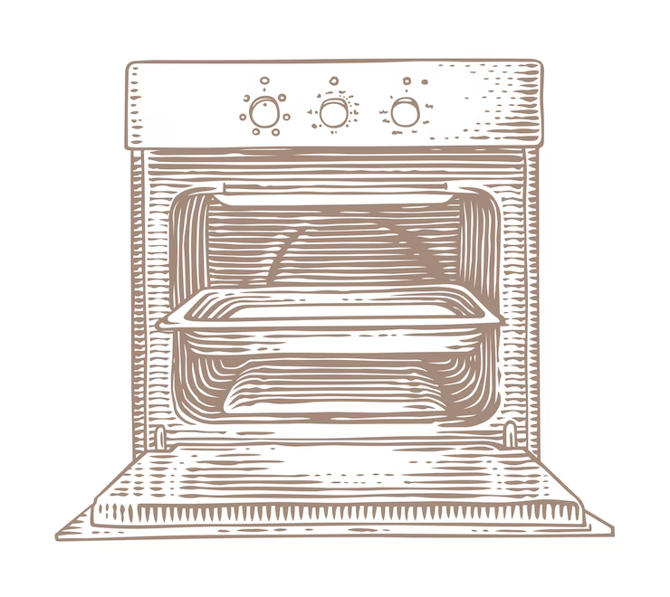

Site de receitas

Ingredientes da Lasanha de Frango!
- 1 peito de frango cozido e desfiado
- 1 cebola picada
- 2 dentes de alho picados
- 2 colheres de sopa de azeite
- 1 lata de molho de tomate
- 1 pacote de massa para lasanha
- 300g de queijo muçarela fatiado
- 300g de presunto fatiado
- Sal e pimenta a gosto
Modo de preparo:
- Preparar o frango: Cozinhe o peito de frango com sal e temperos a gosto. Desfie bem e reserve.
- Fazer o refogado: Em uma panela, aqueça o azeite e refogue a cebola e o alho até dourar. Acrescente o frango desfiado e misture bem. Tempere com sal, pimenta, páprica ou o que preferir.
- Preparar o molho rosé: Adicione o molho de tomate ao frango e misture bem. Após aquecer, adicione o creme de leite. Mexa até ficar homogêneo e com textura cremosa. Ajuste o sal e deixe ferver por 2-3 minutos. Desligue o fogo.
- Montar a lasanha: Em um refratário, coloque um pouco do molho rosé no fundo. Adicione uma camada de massa, uma de molho e uma de queijo. Repita as camadas até acabar os ingredientes, finalizando com queijo por cima.
- Assar: Cubra com papel alumínio e leve ao forno preaquecido (180–200 °C) por cerca de 30 minutos. Retire o alumínio e deixe gratinar por mais 10–15 minutos.

O resultado é uma delicoiosa Lasanha! Obrigado pelo seu tempo!